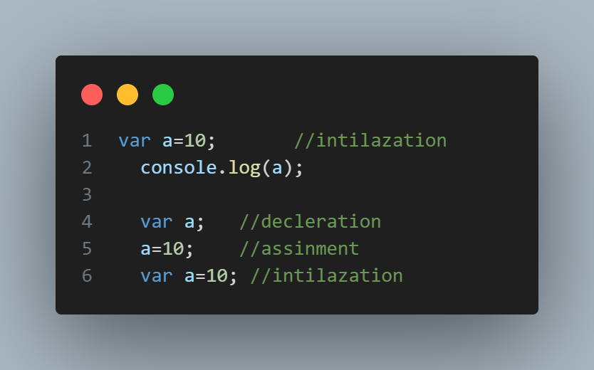

variables in javascript
Variables are "containers" for storing information. JavaScript variables are used to hold values or expressions. A variable can have a short name, like x, or a more descriptive name, like carname.
Rules for JavaScript variable names: Variable names are case sensitive (y and Y are two different variables) Variable names must begin with a letter or the underscore character Note: Because JavaScript is case-sensitive, variable names are case-sensitive. The variables declared using the var keyword are hoisted at the top and are initialized before the execution of code with a default value of undefined. The variables declared in the global scope that is outside any function cannot be deleted
In JavaScript, users can declare a variable using 3 keywords that are var, let, and const.
Let key word
javaScript let is a keyword used to declare variables in JavaScript that are block scoped.
The variables which are declared inside the { } block are known as block-scoped variables. variables declared by the var keyword cannot be block-scoped.

const keyword
The difference in const variable declaration to others is that it cannot be re-assigned.properties in const key word.
- Cannot be reassigned.
- Its Block Scope
- It can be assigned to the variable on the declaration line.
- Its a Primitive value.
- The property of a const object can be changed but it cannot be changed to a reference to the new object
- The values inside the const array can be changed, it can add new items to const arrays but it cannot reference a new array.
- Re-declaring of a const variable inside different block scopes is allowed.
- Cannot be Hoisted
- Creates only read-only references to value.